Pushing the boundaries of searches
for primordial non-Gaussianity
or how I learned to stop worrying about non-universality and \(b_\phi\)
Nhat-Minh Nguyen (Nguyễn Nhật Minh)
Kavli IPMU and ICISE ·
YITP–APCTP workshop Theoretical challenges towards non-linearities from the early universe · 2026
PNG probes inflaton interactions and extra fields
The primordial bispectrum \(\langle\zeta\zeta\zeta\rangle=B(k_1,k_2,k_3)\) carries information about additional interactions and degrees of freedom during inflation.
\(f_{\rm NL}\) is the amplitude of a PNG shape/template.
Why target primordial non-Gaussianity at unity?
\[ f_{\rm NL}^{\rm loc}=\tfrac{5}{12}\,(1-n_s)\simeq 1.5\times10^{-2} \]
single-clock + adiabatic + attractor
\( \sigma\!\left(f_{\rm NL}^{\rm loc}\right)\lesssim 1 \)
- A measured \(|f_{\rm NL}^{\rm loc}|\sim\mathcal{O}(1)\) would mean an extra field, nonlinear superhorizon evolution, or a non-attractor phase.
- \(n_s\) sets where the relation becomes testable.
Rules out standard attractor single-clock dynamics, not literally every one-field model [Green, TASI 2212.08685 §5.2].
\[ f_{\rm NL}^{\rm equil}\sim\mathcal{O}(1)\!\left[\,c_s^{-2}\!-\!1,\ \tfrac{\dot\phi^{2}}{\Lambda^4},\ \ldots\right] \]
\(c_s\) = sound speed of the fluctuations · \(\dot\phi\) = inflaton velocity · \(\Lambda\) = EFT cutoff of inflation
\( \bigl|f_{\rm NL}^{\rm equil}\bigr|\sim 1\!-\!10,\ \ \sigma\!\left(f_{\rm NL}^{\rm equil}\right)\lesssim 1 \)
- Canonical slow-roll gives \(f_{\rm NL}^{\rm eq}\ll1\) (weakly coupled). A measured \(f_{\rm NL}^{\rm eq}>1\) rules that out.
- Unity asks a different question: is the inflaton weakly coupled?
\(1\!-\!10\) is a natural regime, not a universal prediction; pure Einstein-gravity terms stay slow-roll suppressed. A heavy field \(m\sim H\) gives an orthogonal / quasi-single-field shape instead [Green, TASI 2212.08685 §5.3].
The CMB is a single 2D surface

\(f_{\rm NL}^{\rm local} = -0.9 \pm 5.1\)
Planck 2018 T+E bispectra [Planck Collaboration 2019]
- One 2D last-scattering surface, so \(N_{\rm modes}\sim \ell_{\rm max}^2\)
- Temperature is already cosmic-variance limited
Galaxy surveys fill a 3D volume
\(f_{\rm NL}^{\rm local} = -3.6^{+9.0}_{-9.1}\)
DESI DR1 P analysis [Chaussidon+ 2024]
independent \(P{+}B\) re-analysis: \(-0.1\pm7.4\) [Chudaykin, Ivanov and Philcox 2025]
- A 3D volume, so \(N_{\rm modes}\sim V k_{\rm max}^3 \gg \ell_{\rm max}^2\)
- \(\sigma(f_{\rm NL})\sim1\) is within the reach of SPHEREx, Spec-S5 [Chen, Green and Lee 2026]
- Also sensitive to the cosmological collider [Green, Han and Wallisch 2026]
- …and galaxies are biased tracers, so \(f_{\rm NL}\) shows up as a scale-dependent bias
Galaxies respond to the long-wavelength density mode
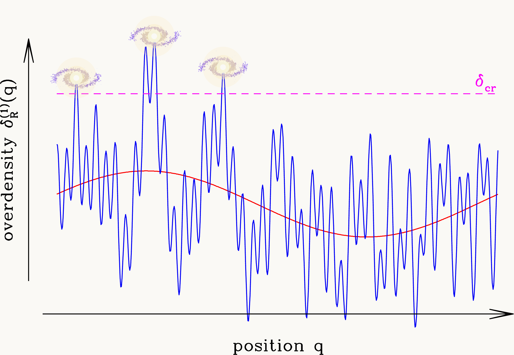
Peak-background split: a long density mode \(\delta_L\) lifts the local background, so more peaks cross \(\delta_{\rm cr}\) and more galaxies form.
\[ \delta_g = b_1\,\delta_m \]
\(b_1\) = how galaxy abundance responds to the long density mode. Local PNG adds a second response: the long potential mode also modulates the small-scale power.
Galaxy abundance responds to both the density and the potential mode
\[ b_1=\frac{d\ln\bar n}{d\ln\bar\rho_m}\,,\qquad\qquad b_\phi=2\,\frac{d\ln\bar n}{d\ln\sigma_8} \]
\(b_1\): how the galaxy number density \(\bar n\) responds to a long mode of density fluctuations. \(b_\phi\): how \(\bar n\) responds to \(\sigma_8\), the amplitude of density fluctuations, rescaled by local PNG and the long potential mode.
\[ \text{universal mass function}\;+\;\text{tracer conservation}\;\;\Longrightarrow\;\; b_\phi=2\delta_c\,(b_1-1) \]
The usual shortcut for \(b_\phi\). See Part II for why it might fail for observed galaxies.
Nothing in late-time physics mimics the \(k^{-2}\) bias
\[ \Delta b(k)\;\propto\; b_\phi\,f_{\rm NL}\,k^{\,\Delta-2} \]
local \(k^{-2}\) · orthogonal \(k^{-1}\) · equilateral \(k^{0}\)
\(\Delta\) is the squeezed-limit exponent of the primordial bispectrum.
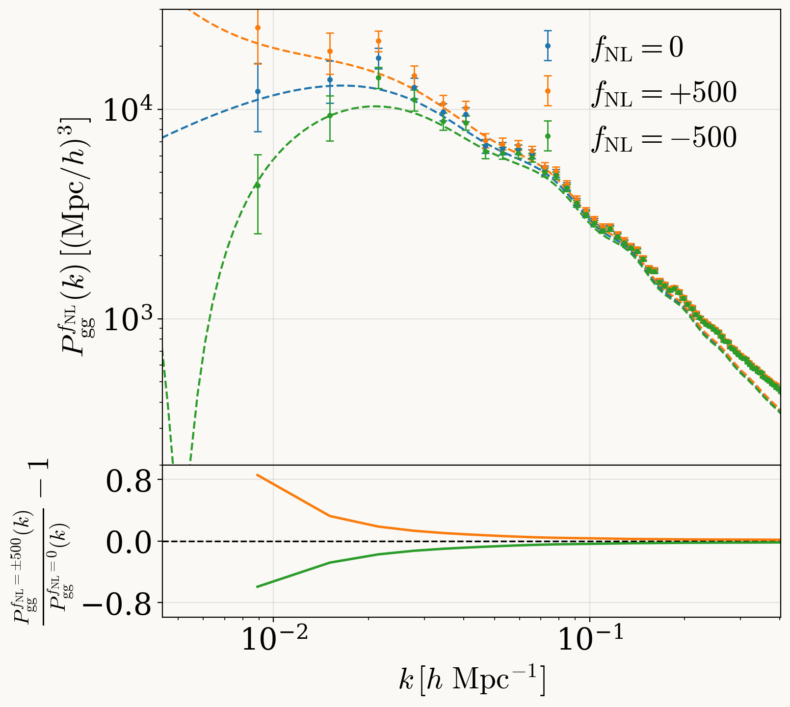
Reaching \(\sigma(f_{\rm NL})\approx1\) means clearing three bottlenecks
Too few modes. The local \(k^{-2}\) signal sits at the lowest \(k\), where even a 3D survey runs short. Part I adds a second observable.
The \(b_\phi\) degeneracy. Biased tracers give only \(b_\phi f_{\rm NL}\), and the universality shortcut \(b_\phi=2\delta_c(b_1-1)\) fails for real galaxies. Part II pins \(b_\phi\) from data.
A lossy statistic. The power spectrum throws away higher-order information. Part III keeps the whole field.
Galaxy size as a tracer of local PNG
Nguyen, Akitsu and Taruya, under review at PRD · arXiv:2603.20196
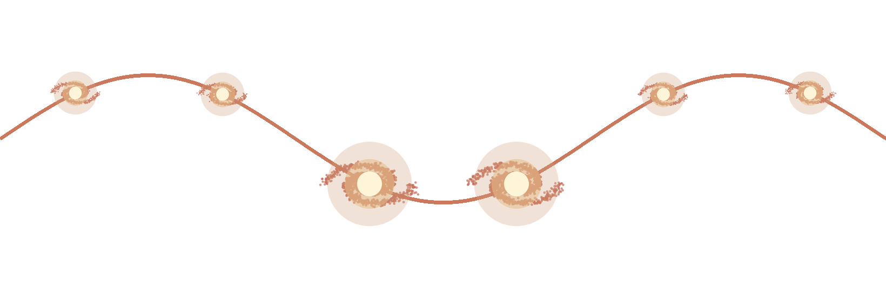
Galaxy sizes as LSS tracers
\[ I_{ij}\propto\sum_p w_p\,(x_{i,p}-x_{i,g})(x_{j,p}-x_{j,g}) \]
size \(=\) trace \(t\equiv\mathrm{tr}\,I_{ij}\); field \(T(\mathbf{x})=\sum_g t\,\delta_D(\mathbf{x}-\mathbf{x}_g)\)
\[ \delta_T=\frac{T}{\bar T}-1,\qquad \boxed{\;\delta_s \equiv \delta_T-\delta_g\;}=b_s\,\delta_m \]
Same 2-point formalism as counts, on galaxies you already have.
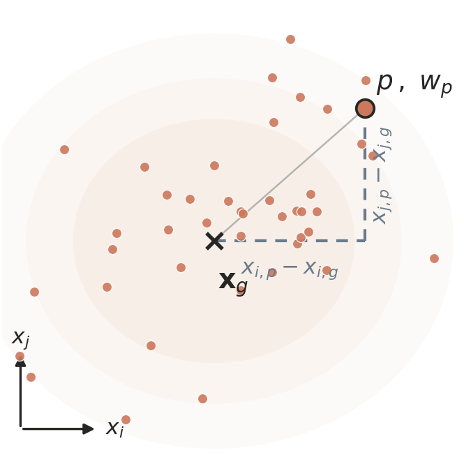
Weak \(b_1\), opposite-sign \(b_\phi\)
\(b_1^{s}\approx 0\)
but \(b_\phi^{s}\neq 0\),
opposite sign.
The \(b_\phi/b_1\) ratio and the sign flip maximize the signal in multi-tracer analyses.
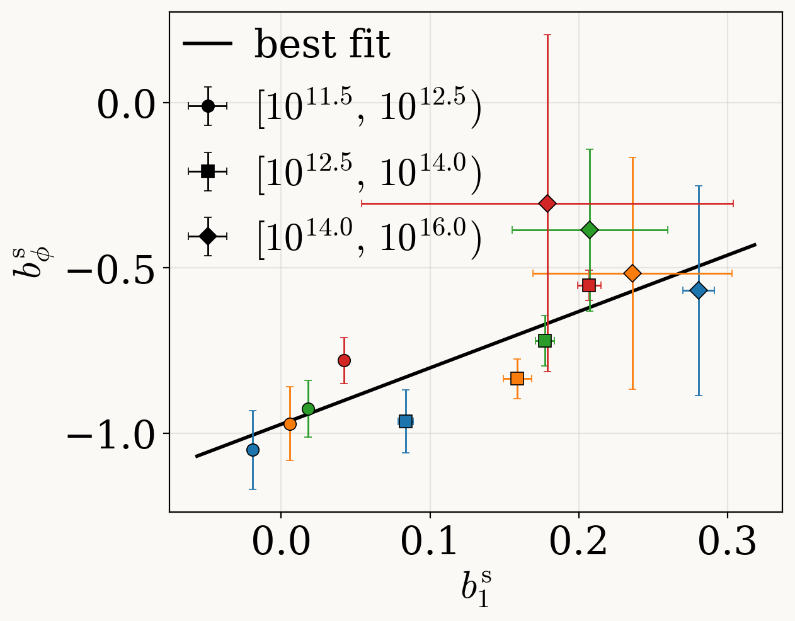
Same \(k^{-2}\), opposite direction
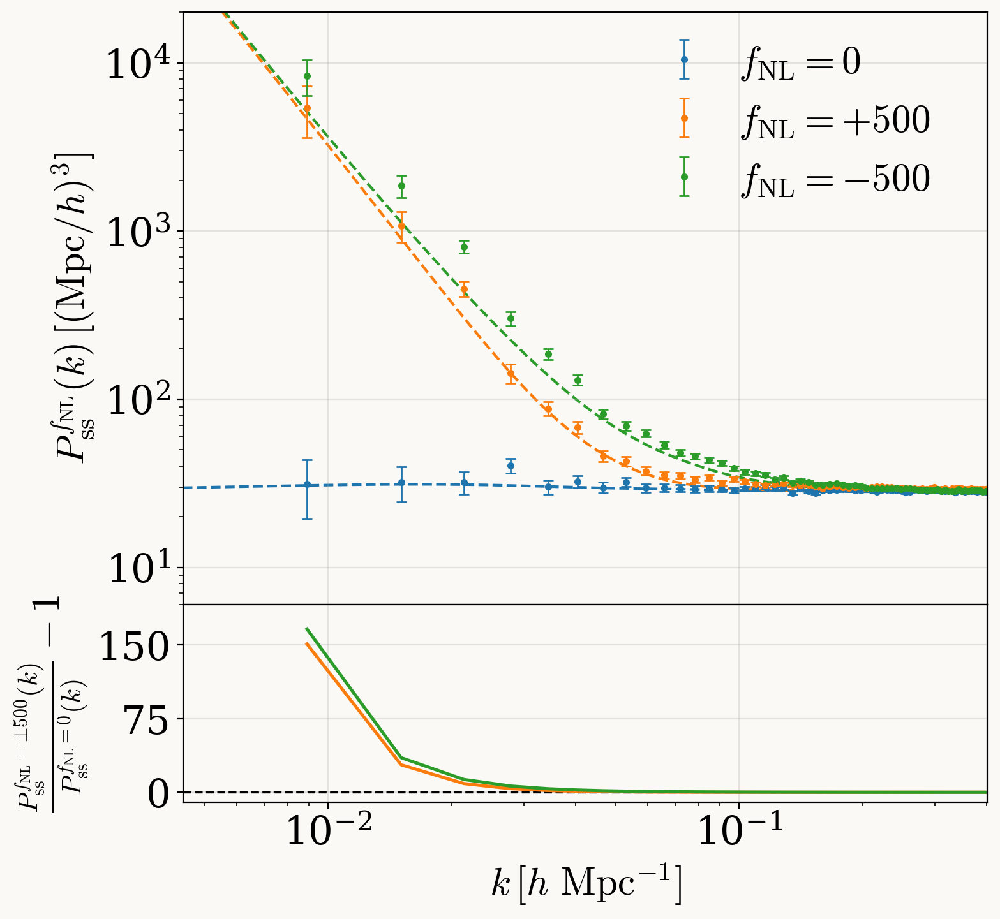
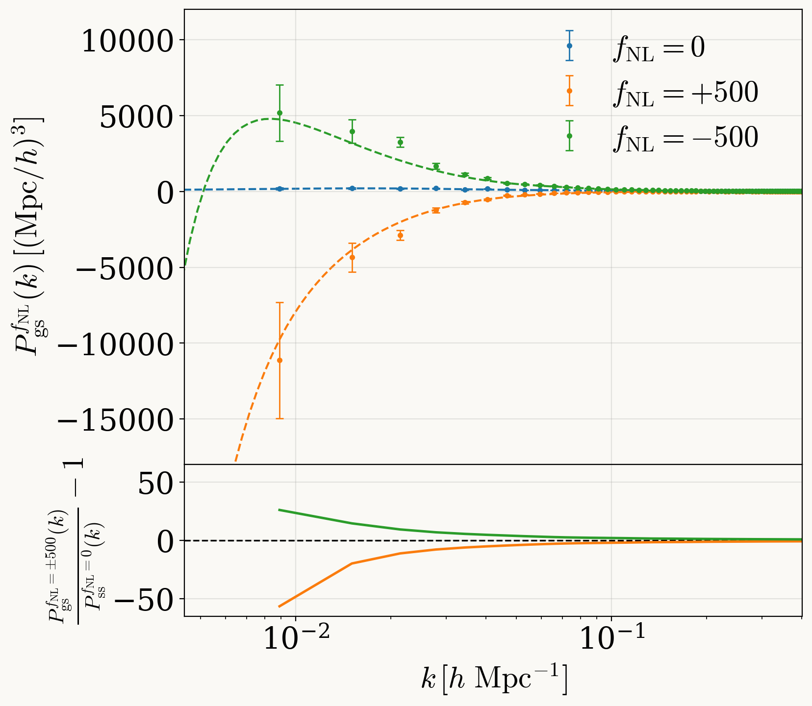
Sizes + counts = a natural multitracer
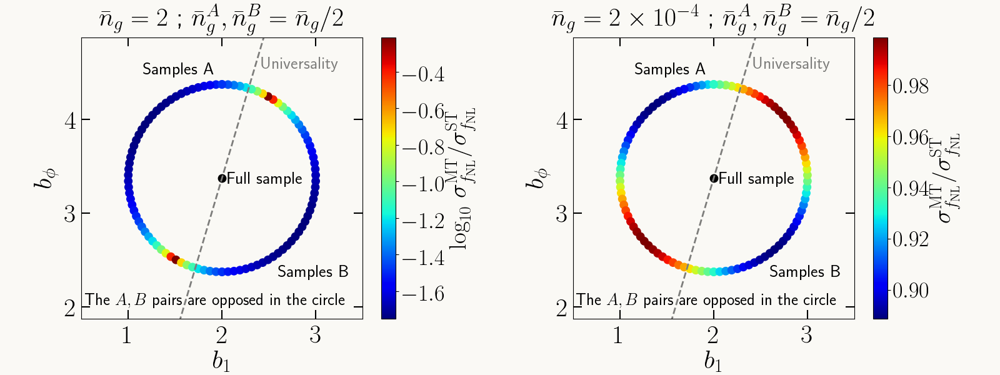
Sample-variance cancellation beats the few-modes floor.
Opposite-sign \(b_\phi^{s}\) gives a near-maximal split, and it also loosens the \(b_\phi\) degeneracy.
Systemtaics I would still worry about
Galaxy formation
halo–size correlation, messy physicsBaryons
feedback moves sizes at fixed massMeasurement
PSF, blending, deblendingA data-driven prior on \(b_\phi\)
from small-scale clustering
Yu and Nguyen, submitted to PRD; arXiv:2607.01314 · code
Real galaxies break the universality relation
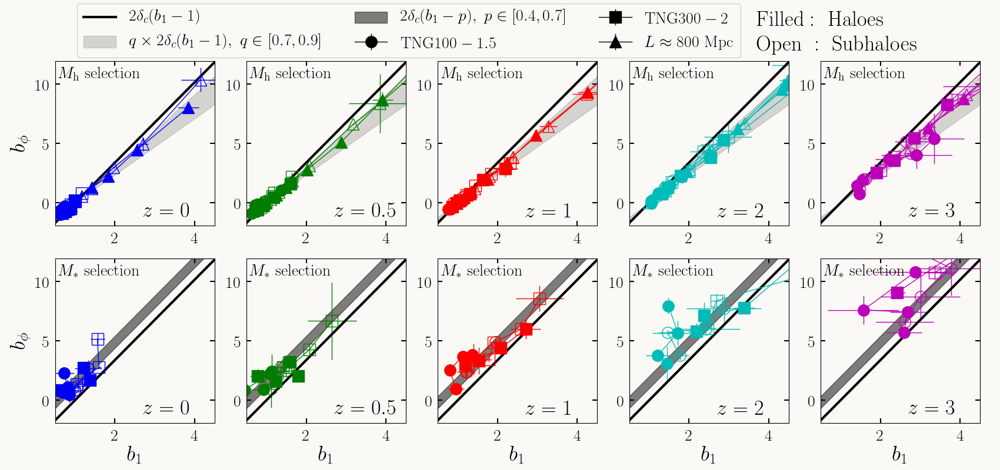
Assuming it biases \(f_{\rm NL}\)
\[ b_\phi = 2\delta_c\,(b_1-p),\qquad p\neq1\ \text{for real galaxies} \]
Fix \(p{=}1\) anyway and the error goes straight into \(f_{\rm NL}\). DESI DR1's \(f_{\rm NL}=6^{+22}_{-18}\) bakes it in.
Three routes — they fail differently
1 · Simulate
\(b_\phi\)(galaxy properties) on hydro / SAM.Inherits the galaxy-formation model.
[Sullivan+ 2023; Hadzhiyska and Ferraro 2025; Moore+ 2026]
2 · Count
Abundance response from \(dn/dz\).Hinges on survey selection.
[Dalal and Percival 2025; Sullivan and Seljak 2025]
3 · This work
Small-scale clustering of the same sample gives \(b_\phi\).Depends on the HOD — cross-validates 1 and 2.
[Yu and Nguyen 2026]
They can fail differently — their (dis)agreement would be itself informative.
The halo occupation distribution
Empirical halo-to-galaxy map, fixed by small-scale clustering.
The same data that fix these curves carry information about \(b_\phi\).
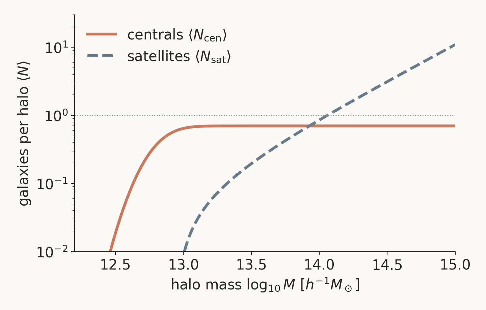
The HOD is fixed by fitting small-scale clustering
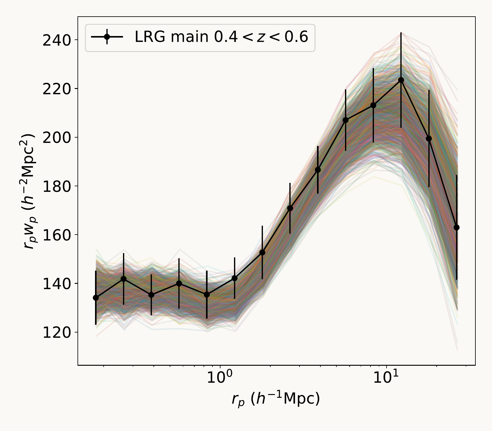
A Bayesian fit of the HOD to the projected correlation function \(w_p(r_p)\).
The posterior spread on the HOD becomes the spread on \(b_\phi\).
From HOD posterior to \(b_\phi\) prior
Data-driven \(b_\phi\) priors for DESI LRGs
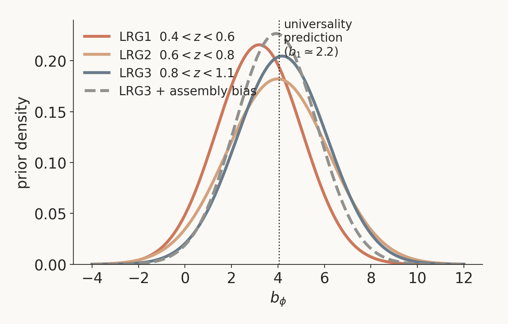
LRG1 \(\mathcal{N}(3.19,1.85^2)\) · LRG2 \(\mathcal{N}(3.99,2.19^2)\) · LRG3 \(\mathcal{N}(4.18,1.95^2)\), for \(0.4 Consistent with universality on average — honest about the spread.
Unbiased \(f_{\rm NL}\), 9–55% tighter
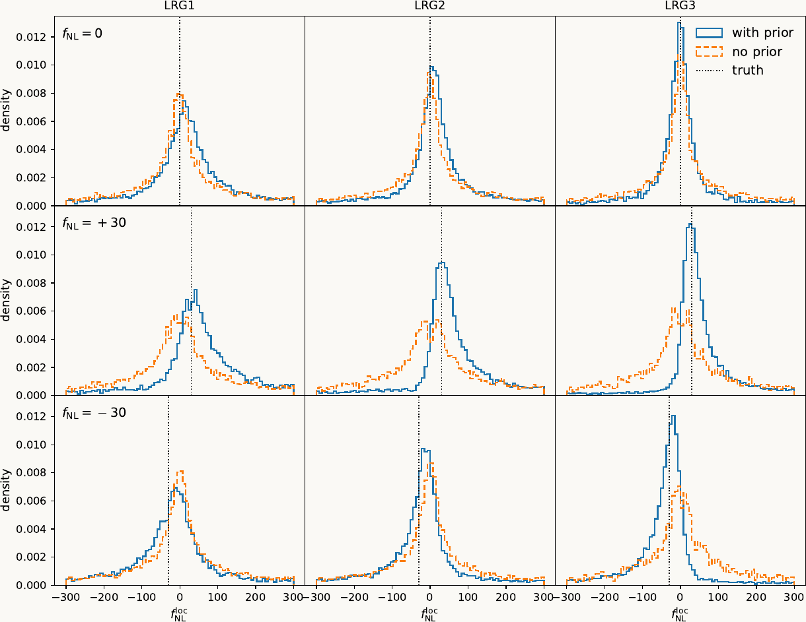
With prior: truth within \(1\sigma\), always.
Without: posteriors pile up at 0. Gains up to 55% at high \(z\).
What the prior buys
| Treatment of \(b_\phi\) | Assumption | \(\sigma(f_{\rm NL})\), LRG3, \(f_{\rm NL}^{\rm true}{=}0\) |
|---|---|---|
| No prior (product only) | none | \(\approx 80\) |
| HOD-derived prior (this work) | HOD from small-scale clustering | \(\approx 44\) |
| Universality, \(p=1\) | exact \(b_\phi=2\delta_c(b_1{-}1)\) | \(\approx 23\) |
Universality looks tighter — by assuming what real galaxies violate. Joint LRG1+2+3 with our prior: \(\sigma(f_{\rm NL})\approx16\).
Field-level inference
Compress to moments, or keep the field?
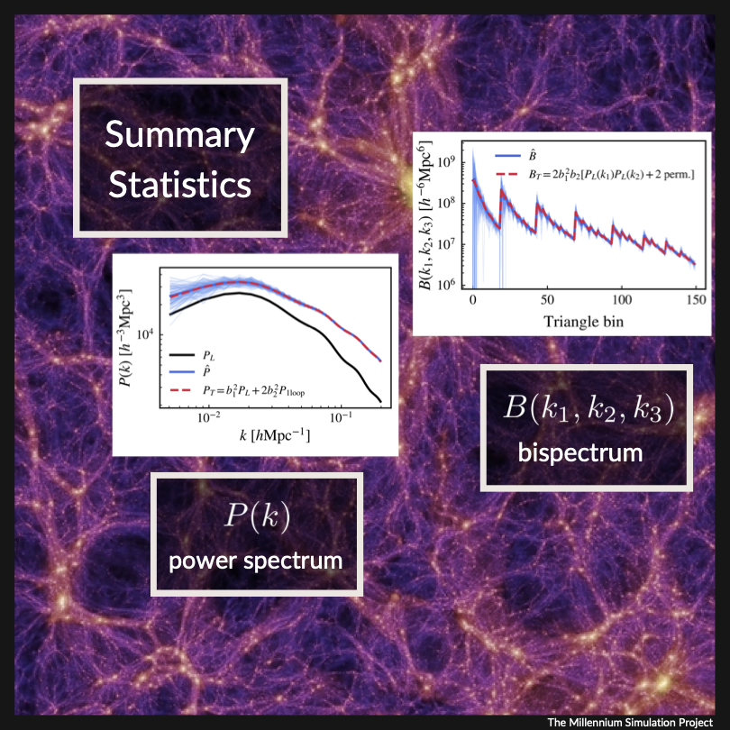
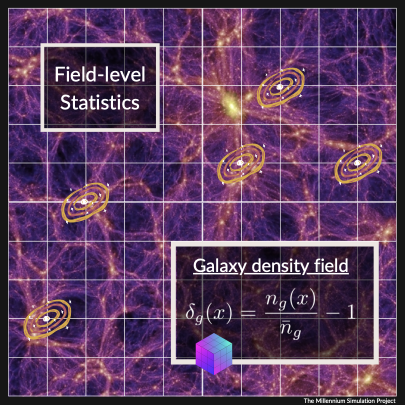
A few bins of Fourier wavenumber k —vs— every Fourier wavector \(\mathbf k\).
Where do the initial conditions go?
\[ \mathcal{P}(\theta\mid d)\;\propto\;\mathcal{P}(\theta)\!\int\!\mathcal{D}\delta_{\rm in}\;\mathcal{P}(d\mid\delta_{\rm in},\theta)\,\mathcal{P}(\delta_{\rm in}\mid\theta) \]
one marginalization over the ICs · shared prior \(\mathcal{P}(\delta_{\rm in}\mid\theta)\), where \(f_{\rm NL}\) lives · the only difference is the data \(d\)
SUMMARY · \(d=\widehat P_k=\tfrac{1}{N_k}\!\sum_{\mathbf k\in\,\rm bin}|\delta(\mathbf k)|^2\)
\[ \ln\mathcal{P}(\widehat P\mid\theta)=-\tfrac12\!\!\sum_{i\,\in\,\text{bins}}\!\frac{\big[\widehat P_{k_i}-P_{k_i}(\theta)\big]^2}{\sigma^2_{k_i}(\theta)} \]
average \(|\delta(\mathbf k)|^2\) in each bin, then sum over bins
\(\sigma^2_{k_i}(\theta)\) = sample (cosmic) variance + shot noise · phases gone
FIELD LEVEL · \(d=\delta(\mathbf k)\)
\[ \ln\mathcal{P}(\delta\mid\delta_{\rm in},\theta)=-\tfrac12\!\sum_{\mathbf k}\frac{\big|\delta^{\rm obs}(\mathbf k)-\delta^{\rm det}(\mathbf k;\theta,\delta_{\rm in})\big|^2}{\sigma_\epsilon^2(\mathbf k)} \]
compare each mode, then sum over modes
\(\sigma_\epsilon^2(\mathbf k)\) = free EFT noise, not Poisson [eq 5] · sample \(\delta_{\rm in}\) · phases kept
A handful of bandpowers vs every mode — that gap is the compression.
LEFTfield samples the initial conditions together with the cosmology

LEFTfield · Nguyen+ arXiv:2403.03220
Optimality is not free
\[ \delta \to \{\widehat P,\widehat B\}\ \ \text{lossless} \iff \text{sufficient for}\ \theta \]
Gaussian \(\Rightarrow\) \(P(k)\) suffices. New PNG shape \(\Rightarrow\) a new statistic to design and validate.
Same modes, far more information
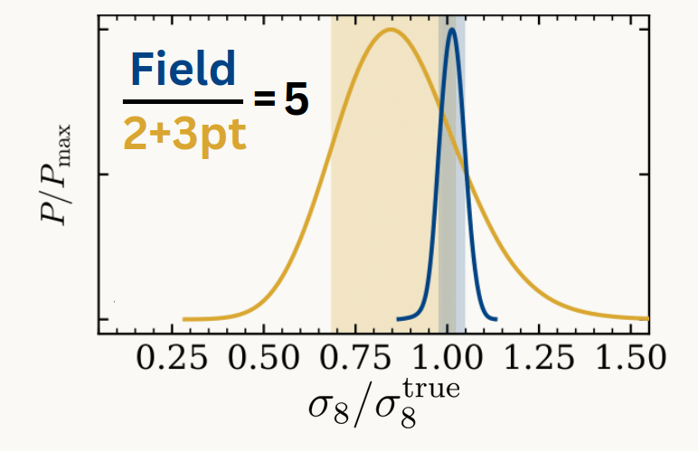
Identical modes, identical \(k_{\rm max}\) — the gain is pure information that \(P{+}B\) throws away.
Blind-tested, and it holds
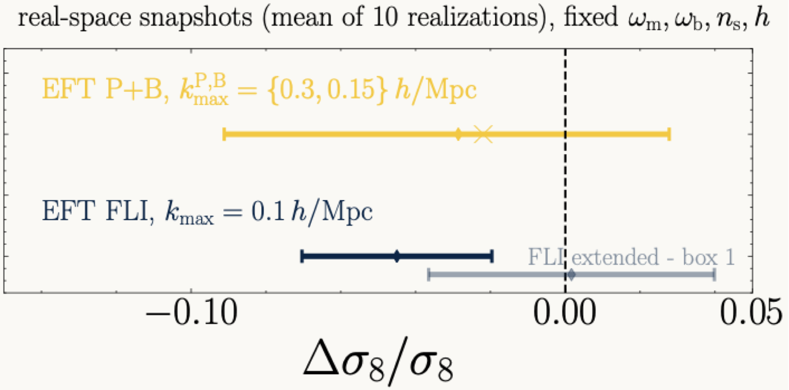
Cosmology hidden; density-split · kNN · voids · \(P{+}B\)-SBI · LEFTfield — all recover \(\Lambda\)CDM unbiased.
Any PNG shape, natively
Inject any primordial bispectrum into the initial field — infer its amplitude directly.
No per-shape template. Equilateral has no \(k^{-2}\) handle, so field level may be its only clean route in LSS.
| shape | 2-pt bias | field level |
|---|---|---|
| local | \(k^{-2}\) ✓ | ✓ |
| orthogonal | \(k^{-1}\) | ✓ |
| equilateral | \(k^{0}\) ✗ | ✓ |
First results — and open questions
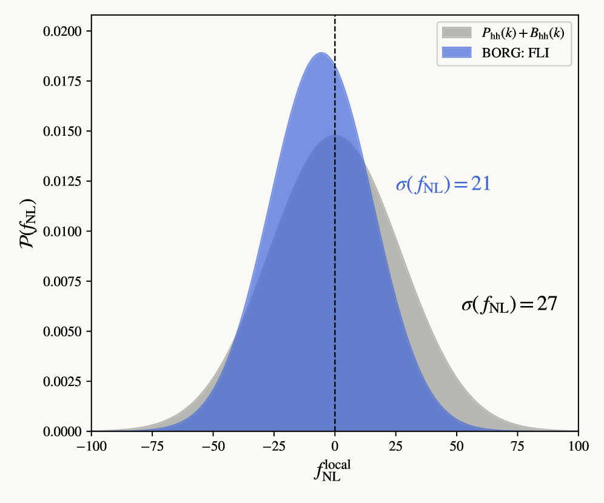
Open — for all of us:
- Is the \(P{+}B\) forecast setup optimal?
- How much do modeling assumptions affect this comparison?
Field level is the clean route for every PNG shape
- Bottleneck 1 (modes): local-specific, eases for equilateral / orthogonal.
- Bottleneck 2 (\(b_\phi\)): generic, persists for every shape.
- Field level: answers all three, for all shapes; the only clean LSS route to equilateral.
Summary
\(\sigma(f_{\rm NL})\lesssim 1\) from LSS is within reach,
one bottleneck, one step in non-linearity at a time.
New observables add modes · new approaches pin \(b_\phi\) · new statistics read the whole field.
arXiv:2603.20196 · 2607.01314 · 2403.03220 · 2405.02252 · nhat.minh.nguyen@ipmu.jp · Thank you — questions?
Every operator the equivalence principle allows
\[ \delta_g(\theta,\hat s)\;=\;\sum_O b_O\,O(\theta,\hat s)\;+\;\epsilon \]
\(O\in\{\delta,\ \delta^2,\ K_{ij}^2,\ \nabla^2\delta,\ \ldots\}\), built from the initial field \(\hat s\)
bias expansion: free coefficients \(b_O\), marginalized · equivalence principle: fixes which \(O\) are allowed · stochasticity: \(\epsilon\), variance \(\sigma_\epsilon^2(k)\)
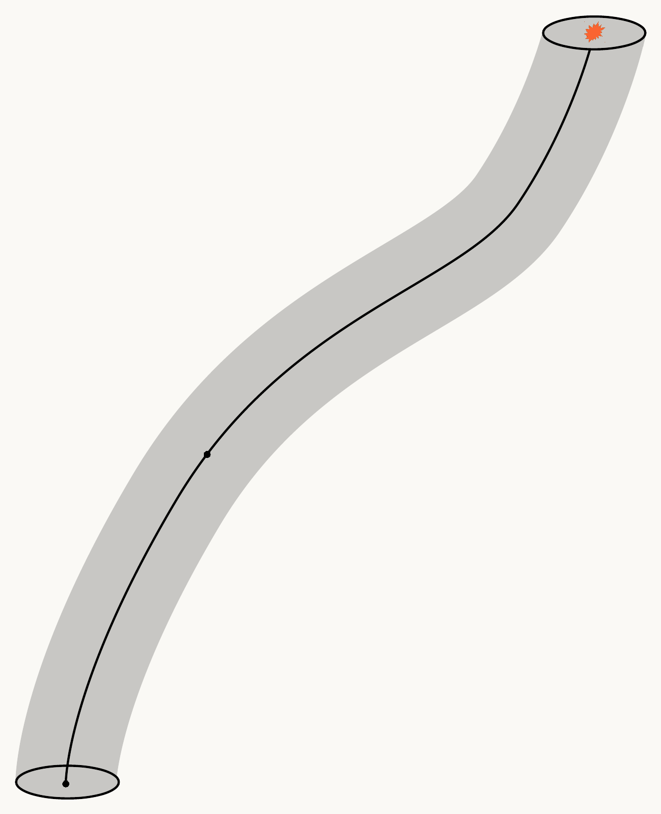
Size (non)universality and \(z\)/mass trends
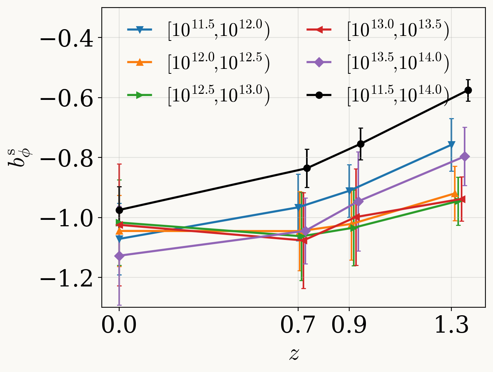
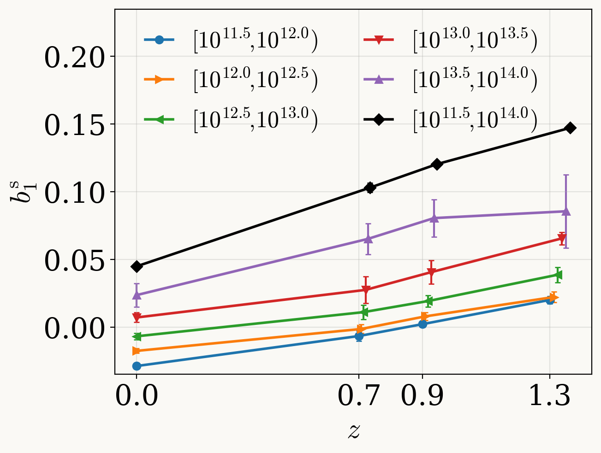
Line-of-sight projection and RSD in the size field
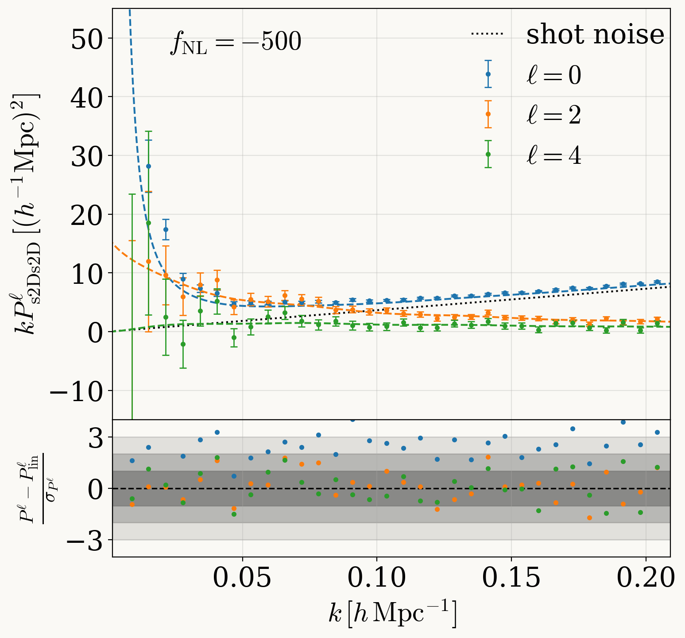
HOD sampling ranges (Tab. I)
| Parameter | LRG1 | LRG2 | LRG3 |
|---|---|---|---|
| \(\log M_{\rm cut}\) | \(\mathcal{N}(12.79,0.45^2)\) | \(\mathcal{N}(12.64,0.51^2)\) | \(\mathcal{N}(12.68,0.38^2)\) |
| \(\log M_1\) | \(\mathcal{N}(13.88,0.33^2)\) | \(\mathcal{N}(13.71,0.21^2)\) | \(\mathcal{N}(13.60,0.47^2)\) |
| \(\sigma\) | \(\mathcal{N}(0.15,0.24^2)\) | \(\mathcal{N}(0.09,0.27^2)\) | \(\mathcal{N}(0.37,0.20^2)^*\) |
| \(\alpha\) | \(\mathcal{N}(1.07,0.48^2)\) | \(\mathcal{N}(1.18,0.39^2)\) | \(\mathcal{N}(0.72,0.34^2)^*\) |
| \(\kappa\) | \(\mathcal{N}(1.40,1.80^2)\) | \(\mathcal{N}(0.60,1.20^2)\) | \(\mathcal{N}(0.51,0.43^2)^*\) |
LRG1/2 widened to \(3\sigma_{\rm HOD}\); LRG3 kept at \(1\sigma\). * clipped at 0.01. Cross-covariances neglected.
Parameterization comparison (Tab. V, LRG3)
| \(f_{\rm NL}^{\rm true}\) | bfnl, no prior | bfnl + prior | bphi + prior | univ. \(p{=}1\) |
|---|---|---|---|---|
| 0 | \(-0.9^{+79.1}_{-81.0}\) | \(-1.5^{+42.2}_{-46.3}\) | \(-0.3^{+43.0}_{-40.2}\) | \(-0.6^{+23.6}_{-23.4}\) |
| +30 | \(-0.9^{+106.6}_{-103.7}\) | \(37.2^{+63.9}_{-29.9}\) | \(37.5^{+61.9}_{-30.3}\) | \(33.3^{+23.0}_{-22.4}\) |
| −30 | \(-0.9^{+100.3}_{-96.7}\) | \(-30.8^{+32.8}_{-63.3}\) | \(-31.4^{+33.6}_{-64.9}\) | \(-27.1^{+23.6}_{-24.0}\) |
\(p{=}1\) matches DESI DR1 precision but bakes in universality; sims already suggest \(p\neq1\).
Assembly-bias robustness
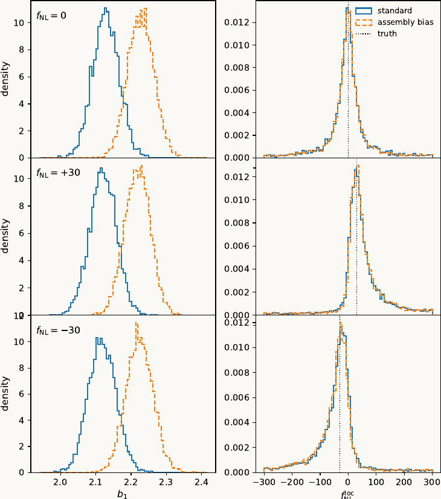
- Decorated HOD, SDSS-LRG environment assembly bias (\(B_{\rm cen}{=}{-}0.04,\,B_{\rm sat}{=}{-}0.17\))
- \(b_1\) shifts 2–3\(\sigma\) — absorbs the amplitude change
- \(f_{\rm NL}\) posterior essentially unchanged
- Targeted check (LRG3) — not a general immunity claim